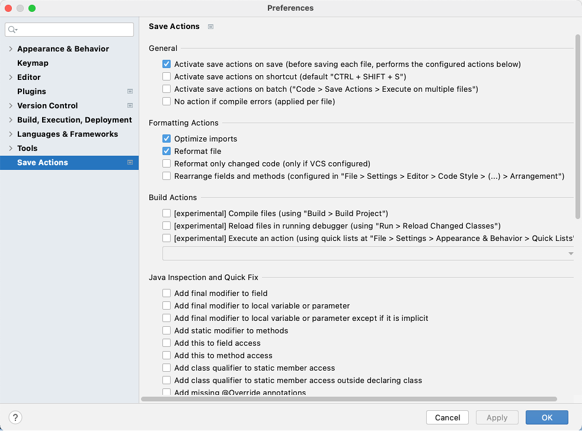
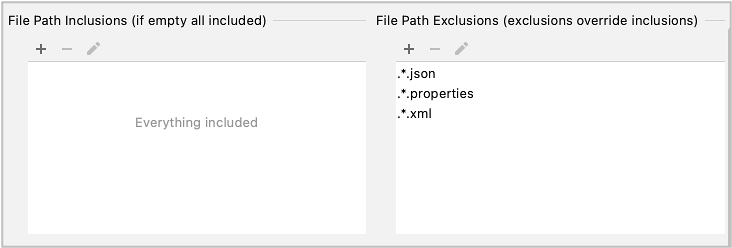

IntelliJ IDEA Plugin settings
Save Actions Plugin (Obsolete)
Save Actions Plugin is a great, productive plugin, but it’s time to use IntelliJ IDEA’ s Actions on Save feature.
This procedure is obsolete. (to be deleted)
Installation
- Open Preferences window(or Settings window)
- (Mac) IntelliJ IDEA > Preferences
- (Windows) File > Settings
- Click
Plugins. - Click search box, input
"save actions", and press enter. - Install Save Actions.
Settings recommended
- In Preference window (or Settings window), tap Save Actions at the end of left pane.
Check these items on.
- Activate save actions on save
- Optimize imports
- Reformat file

Set File Path Exclusions
.*.json.*.properties.*.xml

Click
OK.